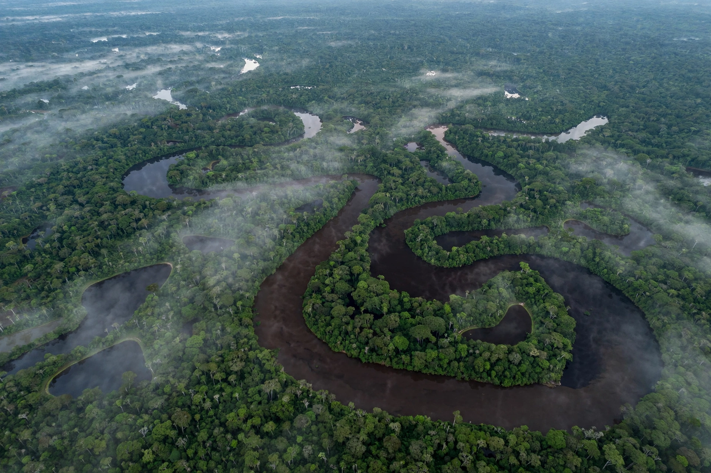

[Image placeholder: A meandering tributary in the Amazon basin]The **Amazon basin** is the part of South America drained by the Amazon River and its tributaries. At about 7 million km² (roughly twice the size of India, and some 40% of South America), it is the largest drainage basin in the world. It spans Brazil (about 60%), Peru, Colombia, and parts of Bolivia, Ecuador, Venezuela and the Guianas, and contains the Amazon rainforest, the largest tropical forest on Earth.
The Amazon River discharges on average about 209,000 m³ of water per second — more than the next seven largest rivers combined — carrying a fifth of the world's river water to the Atlantic. Over 1,100 tributaries include the Negro, Madeira, Tapajós, Xingu, Ucayali and Marañón. The basin's forests store vast carbon, generate moisture recycled as 'flying rivers' to southern South America, and hold about 10% of all known species. Deforestation for cattle, soy and mining, and worsening droughts and fires, threaten to push parts of the forest toward savanna dieback.
The basin was home to large pre-Columbian societies — evidenced by terra preta soils, earthworks and geoglyphs — whose populations collapsed after European contact. Today some 30–40 million people live in the basin, including hundreds of Indigenous peoples, many still in voluntary isolation.